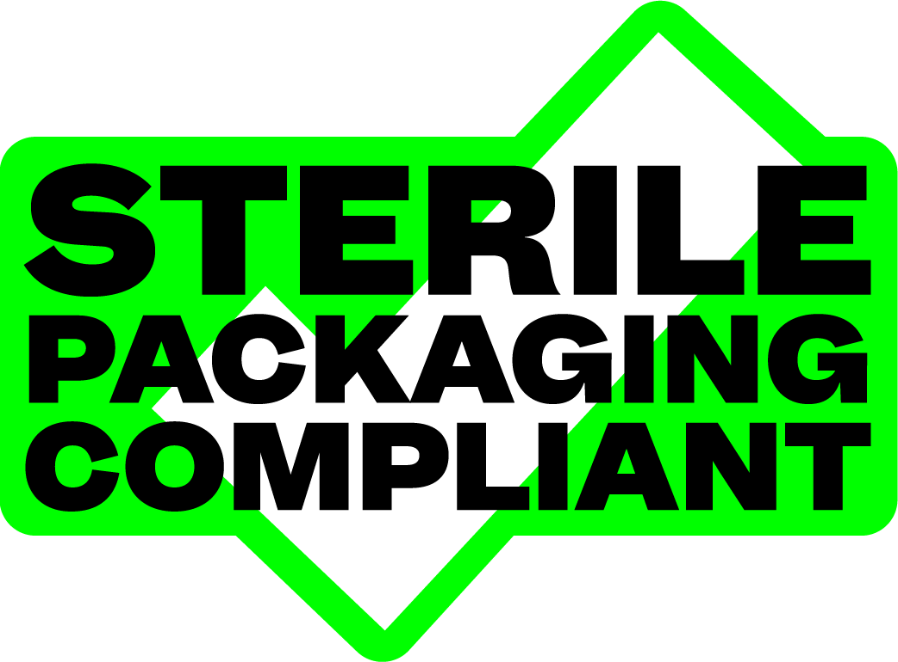
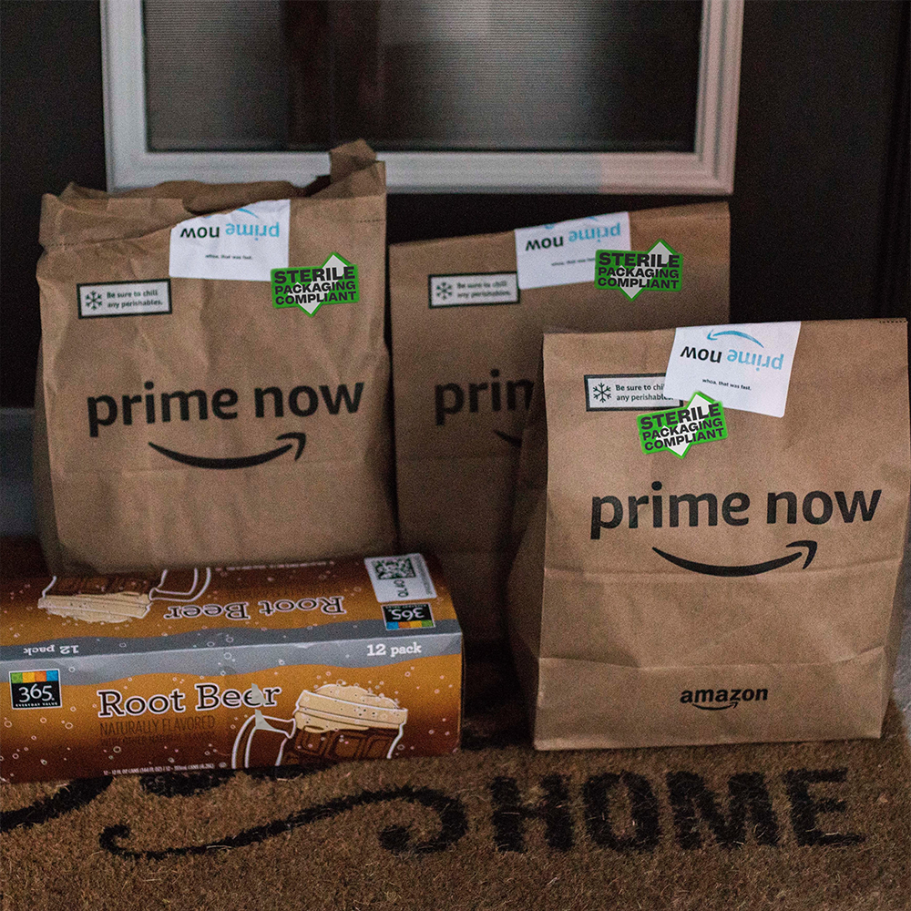
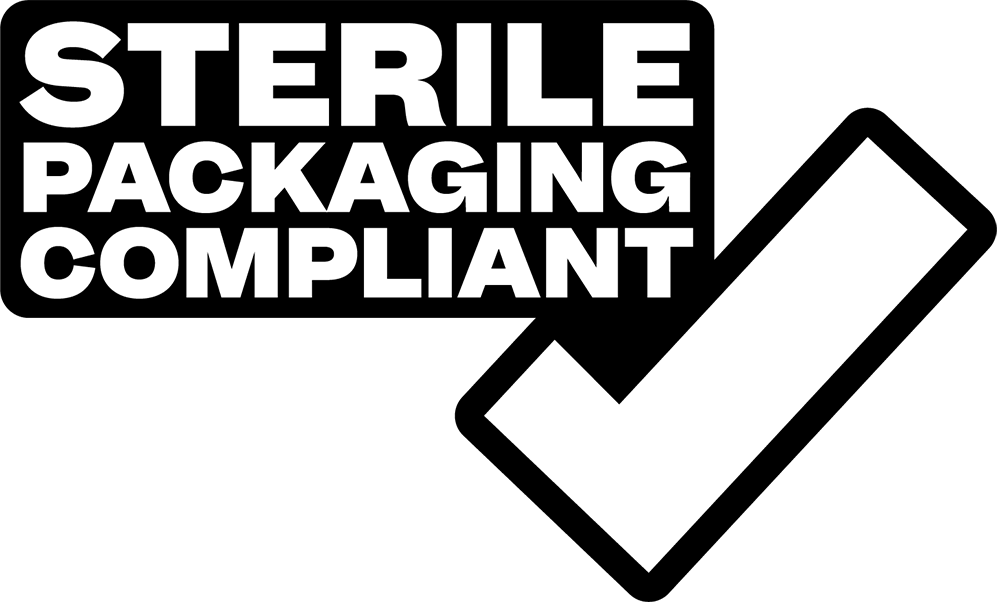
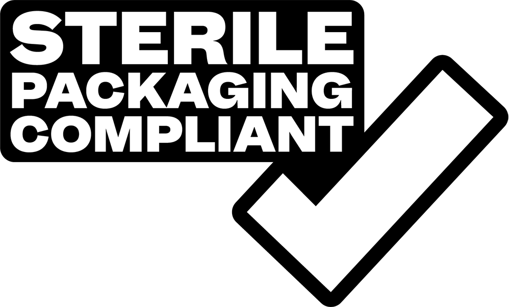

Sterile Packaging Compliant
Sterile packaging compliant.
PROBLEM
In order to stay safe, and because of shifts that most businesses are taking to comply with social distancing, ordering online has become more important than ever. However the people ordering online have anxiety around the sterility of those packages.
BACKGROUND
Many large businesses have released vague statements regarding the new care they are taking in the interest of public health. This does not necessarily address this specific problem and quell this fear. Even more importantly most small businesses don't have the platform to address their customer base on this specific issue.
INSPIRATION
A week and a half ago Cold Picnic a boutique rug company posted a story to their instagram outlining the new care they're taking in packaging their projects. It was very sating of this fear but I'm certain it did not reach all their current or future customers and now it's gone...
SOLUTION
I propose a standards board that can provide peace of mind to customers similar to USDA organic or fair trade.
PROCESS
I will go as far as to outline generally what the standards of handling should be based off the video from Cold Picnic and communicate those through a visual diagram. I also propose that businesses can submit a video of their process to 'the board' and receive a shipment of stickers and an all clear to publish their compliance.
MASON YOUNG-SHOR
Final.
  
